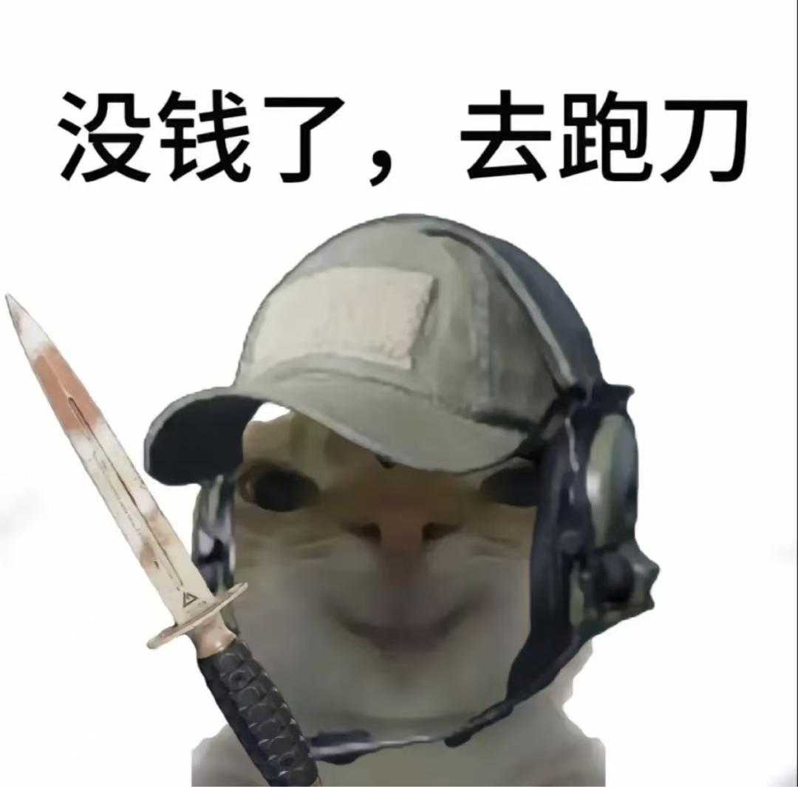
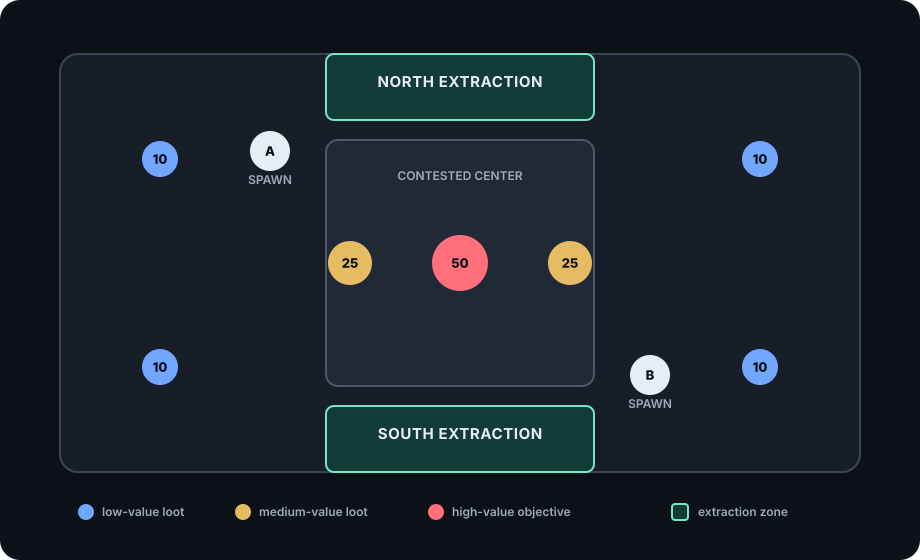
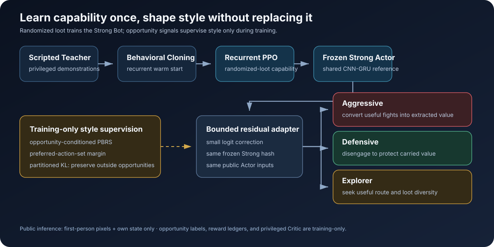

Strong
Balanced task capability
Search→valuable loot→ extract→bank value
VIZDOOM · REINFORCEMENT LEARNING
Balanced task capability
Search→valuable loot→ extract→bank value
Useful combat conversion
Five hits→kill→ loot cache→extract

Value preservation under risk
Low HP + loot→stop pursuit→ disengage→preserve value
Useful route and loot diversity
Multiple regions→upgrade backpack →extract
01 · SCENARIO
The rules create a real choice: contest valuable loot, fight for an opponent's carried value, or leave safely with what you have.

02 · METHOD
Capability is learned once. Style is added with small bounded residual adapters over the same frozen Strong Actor.

Fair observation. Public inference uses only first-person pixels and the player's own public state. Privileged Critic features and reward ledgers are training-only.
03 · HOW TO TELL
Style is not a costume or a runtime rule. It is a learned shift in what the policy chooses to do under the same game mechanics.
Priority · complete the task
Balances loot, combat risk, and extraction timing.
Watch: high-value loot becomes banked value.Priority · convert useful fights
Initiates encounters when combat can create extractable value.
Watch: hit → kill → corpse cache → extraction.Priority · protect carried value
Disengages when low resources make continued combat costly.
Watch: stops chasing, creates distance, leaves alive.Priority · improve route and inventory
Visits useful loot regions and replaces low-value items.
Watch: broader search → backpack upgrade → extraction.04 · RESULTS
The most direct frozen validation evidence for the product claim. Selection never accesses the test split.
| Style adapter | Paired style shift | Task retention | Evidence tier |
|---|---|---|---|
| Aggressive | +0.101 | 93.5% | Directional Showcase |
| Defensive | +0.006 | 96.3% | Validation demonstration |
| Explorer | +0.050 | 94.4% | Validation demonstration |
Positive paired shifts mean each adapter moved its own style metric in the intended direction; the three metric scales are not a cross-style ranking. Aggressive misses one heldout opponent-retention check. Defensive and Explorer lose 11.7 and 17.5 percentage points of heldout extraction respectively. These are product Showcase artifacts, not official-test results.